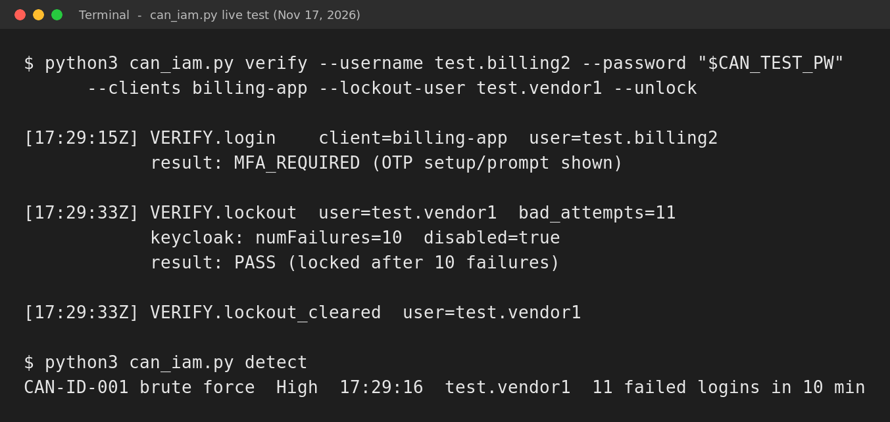
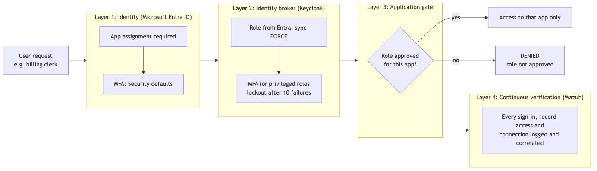

CB2-02: application gate (can_iam.py verify, live run 2026-11-17)

CB2-03: MFA and lockout enforced, brute-force alert raised (same run)
| Prepared by: | Akhila Chennamaneni, IAM & GRC Analyst (author) |
| Organization: | HealthLine Regional Medical Center (HRMC), Care Access Navigator (CAN) capstone |
| Course: | Cybersecurity Basics 2 (DAE 6-Month Cybersecurity, Cohort 2) |
| Rubric criterion: | Criterion 1: Advanced Cybersecurity Defense Strategies |
| Environment: | Entra ID + Keycloak (capstone), Wazuh with live Linux agent, IR1 forensic lab, CISO Assistant |
| Date: | November 19, 2026 |
Zero Trust means never trust, always verify: no user, device or network location is trusted by default, every request is checked against identity, role and context, and access is the minimum needed. In the capstone, a request has to pass four layers, each able to stop it on its own:

| Layer | Control (Care Access Navigator) | Evidence that it is enforced |
|---|---|---|
| 1. Identity provider (Entra ID) | Assignment required on the Keycloak broker app; MFA via Security defaults; app roles carry the job role | Control test AC-01 #3 'Entra assignment required' PASS (audit CAN-IA-2026-01); EV-17 Security defaults; leaver Jeevan Smith refused at Microsoft sign-in |
| 2. Identity broker (Keycloak) | Role mapped from Entra with sync FORCE; MFA for privileged and payment roles; lockout after 10 failures | Screenshot CB2-03: billing user MFA_REQUIRED; test.vendor1 locked after 10 failures; CAN-ID-001 brute-force alert |
| 3. Application gate | Each app admits only approved roles (EHR: clinician, nurse; Billing: billing) | Screenshot CB2-02: clinician LOGGED_IN to the EHR but DENIED on billing-app |
| 4. Continuous verification | Wazuh correlates sign-ins, record access and connections; a session is not trusted just because it started | SOC 1 and Security Monitoring 1: cross-source rule 100650, account-compromise rule 100507 |
| Host (servers) | SSH keys only, MaxAuthTries 3, system-use banner (added 2026-11-19) | Password login refused: 'Permission denied (publickey)' (section 3.3) |

Defense in depth layers different controls so that one failure is caught by the next. HRMC uses seven layers; at least three of them stopped or exposed each attack in the labs:

| Attack (lab) | Layers that acted |
|---|---|
| Leaver Jeevan Smith tried to sign in (capstone JML) | Identity (Entra disabled) → identity broker (Keycloak copy disabled, after the 12-minute gap) → monitoring (CAN-ID-002) |
| SSH password guessing on hrmc-linux-srv01 (CB2-2026-001) | Monitoring (5763, 40112) → host (keys only, account locked) → policy (banner, PB-01) |
| Billing account reading EHR exports and sending them out (SM1-SCN-01) | Application (billing not approved for clinical data, 100521) → data (FIM / object-access logging) → monitoring (100651 level 15) |
| Before (baseline image) | After (hardened image) | |
|---|---|---|
| Base image | python:3.12-slim (general-purpose, unpinned tag) | Chainguard Python, pinned by sha256 digest, multi-stage build |
| Known vulnerabilities (Trivy, 2026-10-06) | 172: 44 High, 63 Medium, 63 Low, 2 Unknown | 0 |
| Software bill of materials | none | CycloneDX SBOM, 39 components (reports/hardened/sbom.cdx.json) |
| Runtime | root, writable, shell + pip present | UID 65532, read-only filesystem, all capabilities dropped, no-new-privileges, no shell, no pip |
Risk: third-party code inherited through the container base image (and through any later tag change upstream). Mitigation: minimal base, digest pinning
(the build cannot silently change), vulnerability scanning in the build, SBOM for future CVE look-ups, and a locked-down runtime. Source: Cloud Security 1, Criterion 3
(cloud_security_1/can-ehr-container/). The pinned base image is kept locally so the build stays reproducible.
Healthcare needs integrity as much as confidentiality: a wrong role or a changed record harms patients. Bell-LaPadula (no read up, no write down) protects confidentiality with security levels; HRMC uses its idea only for data classification labels (Restricted, Confidential, Internal, Public). Clark-Wilson protects integrity through well-formed transactions and separation of duties, which is exactly how access is managed in the capstone:
| Clark-Wilson element | Care Access Navigator implementation |
|---|---|
| CDIs (constrained data items) | Access entitlements (Keycloak role mappings and groups), EHR patient records, billing records |
| UDIs (unconstrained data items) | Access requests from managers, raw log data, imported files |
| TPs (transformation procedures) | can_iam.py joiner / mover / leaver (the only way entitlements change, with a ticket); EHR application functions behind the role gate |
| IVPs (integrity verification procedures) | Quarterly access review AR-2026-Q4 (16/16 accounts signed), can_iam.py verify, end-to-end tests TC-01 to TC-10, FIM hash checks |
| Certification rule: separation of duties | Approver (the department manager) ≠ implementer (IAM analyst), both recorded per ticket in JML-LOG.csv; SoD rules in CAN_DOC_RBAC_SoD_Access_Request_v1.0 |
| Certification rule: TPs log what they do | Append-only can_iam_audit_log.jsonl, hashed into the evidence index |
| Enforcement rule: only TPs change CDIs | Users cannot change their own roles; Keycloak admin is restricted (EX-03 / EX-04 govern the gaps) |
| Enforcement rule: users are authenticated | Entra MFA (Security defaults) and Keycloak OTP for privileged roles |
| Enforcement rule: user → TP → CDI triples | Role → application client → data: a clinician reaches EHR records only through the EHR app; billing cannot (CB2-02) |
Result: the leaver gap found in the capstone (Keycloak copy still enabled 12 minutes after the Entra disable) was exactly a Clark-Wilson IVP failure caught by verification, and is tracked as finding CAN-FIND-001 until automatic deprovisioning is built.